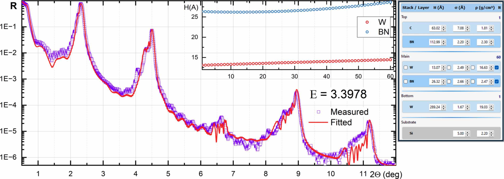
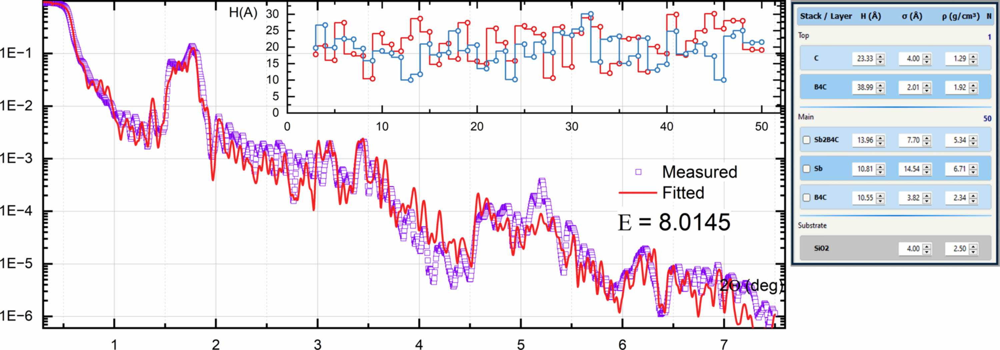

X-Ray Calc 3 — User Manual
Version 7 | Copyright © 2001–2025 Oleksiy Penkov
1 Introduction
X-Ray Calc 3 (XRC3) is an open-source software package for simulating X-ray reflectivity (XRR) and solving the inverse problem of reconstructing film structures from measured XRR curves. It is designed for researchers working with X-ray optics, synchrotron radiation, and thin-film coatings.
The software employs Parratt’s exact recursive method based on the Fresnel equations to calculate XRR and incorporates specialized tools for modeling periodic multilayer structures (PMMs). Refractive indices of materials are computed using the Henke tables of atomic scattering factors (Henke et al., 1993). The computational algorithm has been validated against the IMD software (Windt, 1998), with accumulated variances consistently below 0.5%.
The application allows you to:
- Build multilayer structural models composed of stacks and individual layers
- Calculate theoretical X-ray reflectivity curves as a function of incidence angle (θ) or wavelength (λ)
- Load experimental reflectivity data and compare it with theoretical predictions
- Automatically fit model parameters to experimental data using the Shake LFPSO (Lévy Flight Particle Swarm Optimization) algorithm
- Visualize results through interactive charts with logarithmic/linear scaling
- Define parameter profiles (polynomial, exponential, tabulated) across periodic structures
- Manage materials via the built-in Henke atomic form factor database
2 Installation & First Launch
System Requirements
- Windows 10 or later (64-bit recommended)
- Minimum 4 GB RAM (8 GB recommended for large models)
- Multi-core CPU recommended for parallel computation
Data Storage
On first launch, X-Ray Calc 3 creates a working directory:
- Default location:
%APPDATA%\X-RayCalc3\ - Portable mode: If a file named
uselocaldataexists in the application folder, all data is stored locally next to the executable.
The working directory contains:
| File / Folder | Purpose |
|---|---|
xrc3.ini | Application settings |
Henke/ | Atomic form factor tables |
Backup/ | Auto-save and backup projects |
Output/ | Fitting results (when auto-save is enabled) |
Benchmark/ | Benchmark model files |
Jobs/ | Batch job definitions |
File Association
To associate .xrcx project files with X-Ray Calc 3, go to File > Settings > Paths and Files and click Register file associations (xrcx).
3 Application Overview
Main Window Layout

The primary window comprises four key panels (see Figure 1). The first panel, Project Items (1), showcases the contents of the current project. A project can organize an unlimited number of theoretical models and experimental curves into well-structured folders. The Structure panel (2) functions as a visual depiction of the layered model and provides easy access to all parameters linked with the structural model. The right side contains XRR calculation parameters (3) and Fitting parameters (4) at the top, the main XRR curve plot (5) in the center, and Distributions / Convergence charts (6) at the bottom.
Left Column — Project Panel
- File Toolbar: New, Open, Reopen, Save, Print
- Project Toolbar: Add Model, Export, Copy, Paste, Edit Properties, Add Extension, Copy Image, Print, Delete
- Project Tree: Hierarchical view of all models, data sets, and folders in the current project
- Description: Read-only text memo showing the description of the selected item
Middle Column — Structure Panel
- Structure Toolbar: Stack operations (Add, Insert, Delete) and Layer operations (Add, Insert, Copy, Cut, Paste, Delete)
- Increment Selector: Step size for quick parameter adjustment (10, 5, 1, 0.25, 0.1, 0.01)
- Set Fit Limits Button: Opens the parameter bounds editor for fitting
- Visual Structure Editor: Interactive graphical representation of the layer structure — shows Ambient, Stacks (with N repetitions), individual Layers (with H, σ, ρ values), and Substrate. Double-click elements to edit properties; click parameter values for in-place editing.
Right Column — Working Area
- Calculation Toolbar: Load Data, Paste Data, Calculate, Save Result, Copy Result, Batch Execute, Auto Fit, Stop
- Settings Panel: Calculation mode and parameters (left half) alongside Fitting mode and parameters (right half)
- Main Chart: Interactive reflectivity plot (θ or λ vs. reflectivity)
- Chart Info Bar: Cursor position, peak detection, area integration, χ² values
- Chart Pages: Tabbed sub-charts for parameter distributions (Thickness, Roughness, Density, Profile, Fitting Progress)
Status Bar
Displays calculation time, fitting time, application version, and platform (x64).
Menu Bar
| Menu | Purpose |
|---|---|
| File | Project management (New, Open, Save, Settings, Exit) |
| Project | Model operations (New Model, Duplicate, Copy, Paste, Add Folder) |
| Structure | Stack and layer editing (Add, Insert, Delete, Copy, Paste, Cut) |
| Data | Experimental data operations (Load, Paste, Normalize, Smooth, Trim, Export) |
| Calc | Calculation and fitting (Calculate, Calculate All, Auto Fitting, Batch Jobs, Benchmark) |
| Result | Export results (Save, Copy to Clipboard, Copy as BMP/WMF) |
| Tools | Material management (Create Material, Edit Henke Table) |
| Help | User Manual, About dialog |
4 Projects
Project Files
Projects are saved as .xrcx files. Internally, an .xrcx file is a ZIP archive containing:
project.dsc— project metadataparams.dsc— model structure definitions- Associated experimental data files
Creating a New Project
- Choose File > New Project (or click the New toolbar button).
- An empty project is created with no models or data.
Opening a Project
- File > Open Project — browse for a
.xrcxfile - File > Recent Projects — select from up to 10 recently opened projects
- Open toolbar button — click the dropdown arrow for recent projects
Saving a Project
- File > Save Project — save to the current file
- File > Save Project As — save with a new name/location
Auto-Save
When enabled in Settings, the application periodically saves a backup to AutoSave.xrcx in the temp directory. This provides crash recovery — on next launch, you will be prompted to restore the auto-saved project.
Project Locking
When a project is open, a lock file (temp.lock) prevents simultaneous access from another instance. The lock is released when the project is closed.
Project Tree Organization
The project tree shows items in a hierarchy:
- Model Group: Contains all structural models
- Individual models (each with its own layer structure and calculation parameters)
- Extensions (profile functions attached to models)
- Data Group: Contains experimental data sets
- Folders: User-created organizational folders
5 Defining a Model
Creating a Model
- Choose Project > New Model or click the Add Model toolbar button.
- A new model appears in the project tree with a default empty structure.
Duplicating a Model
Select a model in the project tree and choose Project > Duplicate Model to create an exact copy, including all layers, stacks, and parameters.
The Structure Editor

The structure editor is a visual panel in the middle column that displays the current model's layer structure. It shows:
- Ambient (top) — the medium above the structure (typically vacuum or air)
- Stacks — repeating periodic units containing one or more layers
- Individual Layers — single layers outside of stacks
- Substrate (bottom) — the base material
Each element in the structure is displayed as a colored block with its parameters.
Terminology
The following terminology is used throughout XRC3 (as defined in Penkov et al., 2024):
- Material — the chemical composition of a layer (e.g. Mo, SiO2, B4C). Used to look up atomic scattering factors, atomic weights and table densities in the embedded database. Cannot be changed during fitting.
- Layer — the basic geometrical entity. A layer consists of a material and has three parameters: thickness (H), roughness (σ) and density (ρ). All three are adjustable during fitting.
- Stack — a set of layers. It can be single (non-repeating) or periodic (repeated N times).
- Structure — a set of stacks, including a substrate. The substrate is a special stack consisting of a single layer with infinite thickness.
Stacks (Periods)
A stack represents a periodic multilayer structure — a group of layers repeated N times.
Adding a stack
- Select the model in the project tree.
- Choose Structure > Add Stack or use the structure toolbar.
- The Stack Properties dialog opens with:
- Stack name: A label for the stack
- N: Number of repetitions (periods)
Editing a stack
Double-click the stack header in the structure editor to open the Stack Properties dialog.
Layers
Each layer has three primary parameters:
| Parameter | Symbol | Unit | Description |
|---|---|---|---|
| Thickness | H | Å (Angstrom) | Physical thickness of the layer |
| Roughness | σ | Å (Angstrom) | Interface roughness (RMS) |
| Density | ρ | g/cm³ | Material density |
Additionally, each layer has a material assignment that links it to an entry in the Henke atomic form factor database.
Adding a layer
- Select a stack or model in the structure editor.
- Choose Structure > Add Layer or use the toolbar.
- The Layer Properties dialog opens with fields for:
- Layer material: Select or type a chemical formula (e.g., "Si", "Mo", "SiO2")
- H (Å): Thickness in Angstroms
- σ (Å): Roughness in Angstroms
- ρ (g/cm³): Density in g/cm³
Navigating layers
The Layer Properties dialog includes << and >> buttons to move to the previous or next layer without closing the dialog.
Layer operations (via Structure menu or toolbar)
- Insert Layer — insert before the selected position
- Copy Layer — copy to internal clipboard
- Paste Layer — paste from internal clipboard
- Cut Layer — copy and delete
- Delete Layer — remove the layer
Quick Parameter Editing
In the structure editor, you can adjust layer parameters directly:
- Click a parameter value to edit it in-place
- Use the Increment selector (in the structure toolbar) to set the step size for fine-tuning
- Changes are applied immediately; if Auto-Calc is enabled, the reflectivity recalculates in real time
Undo
Choose Structure > Undo Structure Changes to revert the last structural modification.
Model Text (JSON)
For advanced users, Structure > Edit Model Text opens a JSON editor showing the raw model definition. This allows direct text editing of the complete structure.
6 Experimental Data
Loading Data from File
- Select a model or data item in the project tree.
- Choose Data > Load from File or click the Load Data toolbar button.
- Browse for a text file containing two-column data (angle/wavelength and reflectivity).
- The data appears as a series on the main chart.
Pasting Data from Clipboard
- Copy two-column data from another application (e.g., a spreadsheet).
- Choose Data > Paste from Clipboard or click the Paste Data toolbar button.
- The data is imported into the current model.
Data Format
The expected data format is a simple two-column text file:
<angle_or_wavelength> <reflectivity>Values can be separated by tabs or spaces. Lines starting with # or other non-numeric characters are treated as comments and ignored.
Example:
0.100 1.000000
0.200 0.999850
0.300 0.998200
0.500 0.956300
1.000 0.523100
2.000 0.012450
5.000 0.000023Data Processing
Normalize
Data > Normalize opens a dialog where you can manually set the normalization factor. This scales the reflectivity values so the maximum equals 1.0 (or another chosen value).
Data > Normalize (Auto) automatically normalizes the data by dividing all reflectivity values by the maximum value.
Smooth
Data > Smooth applies a Savitzky-Golay smoothing filter to reduce noise in the experimental data while preserving peak shapes.
Trim
Data > Trim removes the low-reflectivity tail of the data (values below a threshold), which can improve fitting convergence by eliminating noisy data points at high angles.
Exporting Data
- Data > Copy to Clipboard — copy data in tab-separated format for pasting into other applications
- Data > Export to File — save processed data to a text file
7 Calculation
Algorithm
XRC3 uses the Parratt exact recursive method for simulating specular X-ray reflectivity. A Gaussian distribution is assumed for interface roughness. The refractive indices of materials are calculated using the Henke tables of X-ray scattering factors (Henke et al., 1993). Reflectivity calculations can be performed as functions of either incidence angle or wavelength.
Calculation Modes
X-Ray Calc 3 supports two calculation modes:
Theta Mode (by angle)
Calculates reflectivity as a function of incidence angle at a fixed wavelength.
| Parameter | Description |
|---|---|
| θ1 | Start angle (degrees) |
| θ2 | End angle (degrees) |
| λ (Å) | Fixed wavelength in Angstroms (default: 1.54043 Å, Cu Kα) |
| Δθ | Angular resolution / step size (degrees) |
| 2θ | When checked, angles are in 2θ (double angle) convention |
Lambda Mode (by wavelength)
Calculates reflectivity as a function of wavelength at a fixed incidence angle.
| Parameter | Description |
|---|---|
| λ1 | Start wavelength (Angstroms) |
| λ2 | End wavelength (Angstroms) |
| θ | Fixed incidence angle (degrees) |
| Δλ | Wavelength step size (Angstroms) |
Polarization
- s-type: S-polarization (TE mode, electric field perpendicular to the plane of incidence)
- sp-type: Mixed σ/π polarization
Number of Points (N)
The N parameter controls the number of calculation points (default: 2000). More points give smoother curves but take longer to compute.
Running a Calculation
- Select a model in the project tree.
- Set the calculation parameters (mode, angle/wavelength range, polarization, N).
- Choose Calc > Calculate or click the Calc Run toolbar button.
- The calculated reflectivity curve appears on the main chart.
Calculate All (Calc > Calculate All) calculates reflectivity for every model in the project.
Auto-Calculation
Multi-Threading
The complete angular data range is divided into segments matching the number of available CPU cores, and each segment is computed in parallel. Configure the number of cores in File > Settings > Calc & Fit:
- Auto (Use all) — use all available CPU cores (default)
- 2, 4, 8, 12, 16, 32, 64 — limit to a specific number of threads
8 Fitting (Optimization)
Fitting adjusts model parameters to minimize the difference between calculated and experimental reflectivity curves. X-Ray Calc 3 uses the Shake LFPSO (Lévy Flight Particle Swarm Optimization) algorithm — a population-based global optimization method with an enhanced “Shake” mechanism to escape local minima (Li et al., 2023; Penkov et al., 2024).

The LFPSO algorithm creates a population of solutions (particles), each being a vector of structural parameters. The population is iteratively modified to produce better-fitting solutions. The Lévy flight is a random walk that uses the Lévy distribution to determine step sizes, providing efficient global exploration due to occasional long jumps. The Shake modification re-initializes the population when convergence stalls, helping the algorithm escape local minima.

Prerequisites for Fitting
Before starting a fit, you need:
- A defined model with initial parameter estimates
- Experimental data loaded into the project
- Fit limits set for each adjustable parameter
Setting Fit Limits
- Select the model in the project tree.
- Click the Set Fit Limits button in the structure toolbar.
- The Limits dialog opens, showing a table of all layer parameters (H, σ, ρ) with columns for:
- Min: Lower bound for fitting
- Max: Upper bound for fitting
- Only parameters with Min ≠ Max will be adjusted during fitting. Set Min = Max to fix a parameter.
Fitting Modes
The software provides several structure-representation methods. The user chooses the most suitable depending on the nature of the coating:
| Structure Representation | Applicability | Computation Time |
|---|---|---|
| Regular (Irregular) | Regular non-periodic coatings | Long |
| Periodic | Periodic multilayer mirrors (PMMs) | Short |
| Periodic with arbitrary deviations | Supermirrors, PMMs with arbitrary distributions | Long |
| Polynomial distributions | PMMs with gradual change of parameters | Moderate |
Irregular Mode
Every parameter of each layer is treated independently. This mode is used for non-periodic coatings consisting of several layers. At the start of fitting, the software expands each periodic stack into individual layers. Once fitting is complete, distribution charts are generated for each parameter of every material type (thickness, roughness, density).
- Each layer has its own fitted thickness, roughness, and density.
- The Smoothing window parameter (in Advanced Settings) applies spatial smoothing to prevent unphysical oscillations.
- Specific parameters can be “stack-locked” (paired) — e.g. roughness and density remain constant while thickness varies across the stack.
Periodic Mode
The coating consists of repeated stacks; each stack consists of several layers. Parameters are fitted per-layer within one period, then applied to all periods. A periodicity keeper normalizes layer thicknesses to maintain the total period D of each stack.
- Suitable for structures with consistent periodicity.
- Dramatically reduces the number of fitting variables for PMMs.
Polynomial Mode
Arbitrary distributions of structural parameters across the stack can be described by polynomial functions of depth. Instead of fitting N individual layer thicknesses, the software fits just a few polynomial coefficients (a1–ak) plus the base value x0. The user can select the polynomial order from 1 to 20.
- Order: Maximum polynomial order (1 = linear, 2 = quadratic, etc.)
- Useful for smooth, continuous parameter gradients (e.g. graded-period supermirrors, PMMs with unstable deposition rate).
Basic Fitting Parameters
| Parameter | Description | Default |
|---|---|---|
| Iterations | Maximum number of optimization iterations | 100 |
| Population | Number of particles (candidate solutions) in the swarm | 100 |
| Shake | Enable random perturbation to escape local minima | Checked |
| SeedR | Seed particles from the parameter range | Checked |
| Smooth | Apply smoothing to fitted parameter profiles | Unchecked |
| PW χ² | Point-weighted chi-square calculation | Checked |
| TW χ² | Theta-weighted chi-square function | None |
Theta-Weighted Chi-Square (TW χ²)
Controls how the chi-square metric weights different angular regions:
| Option | Effect |
|---|---|
| None | Equal weight across all angles |
| sqr | Weight ∝ θ² (emphasizes high angles) |
| line | Weight ∝ θ |
| sqrt | Weight ∝ √θ |
| 1/sqr | Weight ∝ 1/θ² (emphasizes low angles) |
| 1/sqrt | Weight ∝ 1/√θ |
Advanced Fitting Settings
Click the Advanced Settings button in the Fitting panel to open the detailed LFPSO configuration dialog.
General
| Parameter | Description | Default |
|---|---|---|
| Tolerance | Target cost function value; fitting stops when reached | 0.005 |
LFPSO Parameters
| Parameter | Description | Default |
|---|---|---|
| SHmax | Maximum number of consecutive shakes | 3 |
| Jmax | Number of iterations without improvement before shake | 1 |
| Vmax | Maximum particle velocity factor | 0.3 |
| ω1 | Velocity scale factor (permanent component) | 0.3 |
| ω2 | Velocity reducing factor | 0.1 |
| k1 | Velocity shake coefficient | 1.41 |
| k2 | Best cost function shake coefficient | 1.41 |
Irregular Mode Settings
| Parameter | Description | Default |
|---|---|---|
| Smoothing window | Width of the smoothing window (set −1 for automatic) | 3 |
Polynomial Mode Settings
| Parameter | Description | Default |
|---|---|---|
| Polynomial factor | Scale factor for polynomial parameter space | 10 |
| Ksxr | Velocity scale factor for polynomial coefficients | 0.2 |
Running a Fit
- Ensure a model with experimental data and fit limits is selected.
- Configure fitting mode and parameters.
- Choose Calc > Auto Fitting or click the Fast Forward toolbar button.
- The fitting process begins:
- The main chart updates in real time, showing the best-fit curve converging toward the experimental data.
- The Fitting Progress chart page shows the χ² convergence curve.
- The status bar displays elapsed fitting time.
- If Live Update is enabled (in Settings), the structure editor updates to show current best-fit parameters.
- Fitting stops when:
- The maximum number of iterations is reached, OR
- The tolerance threshold is met, OR
- You click the Stop button.
Understanding the Cost Function
The cost function (E) measures the deviation between the calculated and target XRR curves:
where I(θ)exp and I(θ)calc are the measured and computed XRR intensities, ω(θ)peak is the peak weight function, and ω(θ)θ is the incidence-angle weight function.
Peak Weight Function (PW χ²)
Specifically designed for periodic multilayer mirrors. Parameters of the periodic stack primarily affect the intensity of primary diffraction peaks, while Kiessig fringes are affected by the substrate and surface layers. The peak weight function concentrates fitting on the primary features of the XRR curve by computing a moving average and weighting points based on their deviation from it.
Incidence-Angle Weight Function (TW χ²)
Allows concentration of the fitting process on distinct segments of the XRR curve by weighting different angular regions differently.
Key properties of the cost function:
- Lower is better — E = 0 means a perfect fit
- Displayed in the Chart Info bar as both current and best values
- Calculated on a logarithmic scale to give equal weight to both high and low reflectivity regions
9 Results & Export
Saving Results
Result > Save Results saves the calculated reflectivity data to a text file with columns for angle/wavelength and reflectivity.
Copying to Clipboard
- Result > Copy to Clipboard — copy reflectivity data as tab-separated text
- Result > Copy as BMP — copy the chart as a bitmap image
- Result > Copy as WMF — copy the chart as a Windows Metafile (vector format, suitable for publications)
Saving the Plot
Result > Save Plot as File saves the chart as an image file.
Structure Image
Structure > Copy as Image copies the visual structure diagram (the layer/stack representation) to the clipboard as an image.
Auto-Save Results
When enabled in Settings (Automatically save results to output folder after fitting), fitting results are automatically saved to the configured Output directory after each fitting run completes.
10 Charts & Visualization
Main Reflectivity Chart
The large chart in the working area displays:
- Calculated reflectivity curves (one per model, color-coded)
- Experimental data (if loaded)
- Best-fit curve (during and after fitting)
Interaction
- Zoom: Click and drag to select a zoom region
- Pan: Right-click and drag to pan
- Reset zoom: Double-click to reset to full view
- Scale toggle: Click the Scale button to switch between linear and logarithmic Y-axis
- Min limit: Set a cutoff threshold — reflectivity values below this limit are clipped
Cursor Tracking
The Chart Info bar shows the current cursor position (X, Y coordinates) as you move the mouse over the chart.
Chart Pages
Below the main chart are tabbed sub-charts:
Thickness (H)
Bar chart showing the thickness of each layer in the structure. After fitting, this shows how layer thicknesses vary across the structure.
Roughness (σ)
Bar chart showing the interface roughness of each layer. Useful for identifying roughness trends in periodic structures.
Density (ρ)
Bar chart showing the density of each layer, with the applied density profile overlaid.
Profile
Electron density (or refractive index) profile as a function of depth into the structure. This gives a physical picture of the complete multilayer structure.
Fitting Progress
During fitting, this chart shows the χ² value vs. iteration number. Use this to monitor convergence:
- A steadily decreasing curve indicates good convergence
- Plateaus may indicate local minima (shake/re-initialization helps escape these)
- Sudden jumps up indicate a shake event
Peak Analysis
The Chart Info bar includes peak detection and analysis:
- Peak Max: Maximum reflectivity value and its position
- Area: Integrated area under the peak (useful for quantitative analysis)
- Period: Estimated multilayer period from peak spacing
11 Profile Extensions
Profile extensions allow you to define how layer parameters (H, σ, ρ) vary across a periodic structure. They model parameter gradients — for example, when layer thickness gradually increases or density changes with depth.
Adding a Profile Extension
- Select a model in the project tree.
- Click the Add Extension toolbar button or choose the extension option from the project toolbar.
- The Extension Type Selector dialog opens with available profile types.
Profile Types
Function Profile
Defines parameter variation using an analytical function:
| Function | Formula | Use Case |
|---|---|---|
| Polynomial | a0 + a1x + a2x² + … | General-purpose gradient |
| Exponential | a0 · ea1x | Exponential growth/decay |
| Parabolic | a0 + a1x² | Symmetric variation |
| SQRT | a0 + a1√x | Gradual initial change |
The Profile Function editor lets you set the coefficients and preview the resulting profile.
Table Profile
Defines parameter variation as a set of (position, value) data points. The application interpolates between points. This allows arbitrary profile shapes that cannot be described by simple functions.
The Profile Table editor provides a grid where you enter depth positions and corresponding parameter values.
Enabling / Disabling Extensions
Each extension can be individually enabled or disabled without deleting it. This lets you quickly compare results with and without a particular profile applied.
12 Tools
Create New Material
Tools > Create New Material opens a dialog to add a custom material to the Henke database.
Enter the chemical formula and the application calculates the atomic form factors from the constituent elements. This is useful for compounds not already in the database.
Edit Henke Table
Tools > Edit Henke Table opens the Henke Table Editor, which allows you to view and modify the atomic scattering factor tables used for reflectivity calculations.
The Henke tables contain wavelength-dependent atomic form factors (f1, f2) for each element. These are the fundamental optical constants used in the Fresnel equation calculations.
Benchmark
Calc > Benchmark opens the Benchmark dialog, which measures the calculation performance of your system:
- Runs a standard reflectivity calculation multiple times
- Reports average execution time
- Useful for comparing performance across different hardware or thread configurations
Configure the number of benchmark runs in File > Settings > Calc & Fit.
13 Application Settings
Access settings via File > Settings. The Settings dialog has five sections, navigated via the tree on the left.
Paths and Files
| Setting | Description |
|---|---|
| Default Project's Folder | Where new projects are saved by default |
| Work Folder | Base directory for all application data |
| Henke Library | Location of Henke atomic form factor tables |
| Jobs | Directory for batch job definitions |
| Benchmark output | Where benchmark results are saved |
| Benchmark | Location of benchmark model files |
| Fitting Output | Where fitting results are auto-saved |
Register file associations (xrcx) — associates .xrcx files with X-Ray Calc 3 in Windows.
Behavior
| Setting | Description | Default |
|---|---|---|
| Automatically calculate when opening project | Run calculation on all models when a project is opened | On |
| Live update structure panel during fitting | Show real-time parameter changes in the structure editor during fitting | Off |
| Automatically save results to output folder after fitting | Save fitting results to the Output directory automatically | Off |
| Automatically check for updates | Check for new versions on launch | Off |
Interface
Interface customization settings (reserved for future options).
Calc & Fit
| Setting | Description | Default |
|---|---|---|
| Number of CPU cores to use | Thread count for parallel computation | Auto (Use all) |
| Number of runs (Benchmark) | How many benchmark iterations to perform | 10 |
Graphics
| Setting | Description | Default |
|---|---|---|
| Default line width | Width of chart series lines in pixels | 2 |
14 Quick Reference
Toolbar Quick Reference
| Button | Action |
|---|---|
| New | Create a new project |
| Open | Open an existing project |
| Save | Save the current project |
| Print the current chart | |
| Add Model | Add a new model to the project |
| Load Data | Load experimental data from file |
| Paste Data | Paste experimental data from clipboard |
| Calc Run | Calculate the selected model |
| Stop | Abort the current calculation or fitting |
| Fast Forward | Start auto-fitting |
| Result Save | Save calculation results to file |
| Copy Result | Copy results to clipboard |
| Scale | Toggle linear/logarithmic chart scale |
| Delete | Remove the selected item |
Structure Toolbar
| Button | Action |
|---|---|
| Period + | Add a new stack |
| Period Insert | Insert a stack at the current position |
| Period − | Delete the selected stack |
| Layer + | Add a new layer |
| Layer Insert | Insert a layer at the current position |
| Layer Copy | Copy the selected layer |
| Layer Cut | Cut the selected layer |
| Layer Paste | Paste the copied layer |
| Layer − | Delete the selected layer |
| Set Fit Limits | Open the parameter bounds editor |
| Increment | Set the step size for parameter adjustments |
Keyboard Shortcuts
| Key | Action |
|---|---|
| F1 | Open User Manual |
15 File Formats
Project File (.xrcx)
A ZIP archive containing:
project.dsc— project metadata (title, descriptions)params.dsc— complete model definitions in text format (layers, stacks, parameters, calculation settings)- Embedded experimental data files
Experimental Data Files
Plain text, two columns separated by tabs or spaces:
# Optional comment lines starting with #
0.100 1.000000
0.200 0.999850
...Column 1: Angle (degrees) or wavelength (Angstroms)
Column 2: Reflectivity (typically 0 to 1)
Henke Tables
Binary or text files in the Henke/ directory containing wavelength-dependent atomic form factors (f1, f2) for each element. These files are required for reflectivity calculations and are included with the application.
Settings File (xrc3.ini)
Standard Windows INI file format. Sections include:
[Path]— directory paths[Window]— window position and size[Options]— behavior flags[Graphics]— chart display settings[Calc]— calculation settings
16 Illustrative Examples
The following examples from the literature demonstrate the application of XRC3 to different types of structures (Penkov et al., 2024).
Single-Layer Coating
Evaluation of a single-layer TiZrNi coating deposited by DC magnetron sputtering. The XRR was fitted starting with a two-layer model (TiZrNi + TiO2), which yielded a cost function of ~0.48. Adding extra layers minimized the cost function to 0.14, revealing non-stoichiometric surface layers and hydrocarbon contamination.

Periodic X-Ray Mirrors
Fitting of XRR curves for Mo/Si and Mo/B periodic multilayer mirrors (PMMs) in periodic mode. The Mo/Si results reveal the well-known asymmetric intermixed zones between Mo and Si. For the 2.3 nm period Mo/B PMM, fitting revealed thin asymmetric intermixing zones and a density difference between the thick Mo sublayer (near-bulk density) and the 0.6 nm Mo layers within the periodic structure (84% of bulk).

Polynomial Fitting on Graded PMMs
A W/BN PMM fitted in polynomial mode. The broadening and shape changes of diffraction peaks indicate variation of layer parameters across the stack. Due to unstable deposition conditions, the thickness and roughness of layers were found to vary gradually.

Supermirror
An Sb/B4C supermirror fitted in irregular mode with paired roughness and density. The fitting revealed the designed depth-graded structure.

17 Troubleshooting
The application shows a "project locked" message
Another instance of X-Ray Calc 3 may have the project open, or a previous session crashed without releasing the lock. Close the other instance, or manually delete the temp.lock file from the temp directory (%TEMP%\X-RayCalc3\).
Fitting does not converge
- Widen the fit limits — the initial parameter bounds may be too narrow to contain the true solution.
- Increase population size — more particles explore the parameter space more thoroughly.
- Increase iterations — the algorithm may need more time to converge.
- Enable Shake — this helps escape local minima.
- Check initial model — a better starting guess leads to faster convergence.
- Try a different fitting mode — Periodic mode may work better than Irregular for regular multilayers, and vice versa.
Calculation is slow
- Ensure multi-threading is enabled (Settings > Calc & Fit > Auto (Use all)).
- Reduce the number of calculation points (N) for preliminary calculations.
- Use the 64-bit version for better performance with large models.
Material not found
- Check the spelling (chemical formula must be exact, e.g., "SiO2" not "Sio2").
- The material may not exist in the Henke database. Use Tools > Create New Material to add it.
Chart appears empty after calculation
- Check that the angle/wavelength range is appropriate for the structure.
- For very thin films, use small angles (0.01 to 5 degrees).
- Switch between linear and logarithmic scale — the reflectivity may be visible only on one scale.
- Verify that the model has at least one layer defined.
Data import fails
- Ensure the data file is plain text with two numeric columns.
- Remove any header lines that are not prefixed with
#. - Check that decimal separators match your system locale (period vs. comma).
- Try pasting the data via clipboard instead.